Метод Симпсона (парабол).
Задача нахождения точного значения определенного интеграла не всегда имеет решение.
Действительно, первообразную подынтегральной функции во многих случаях не удается
представить в виде элементарной функции. Есть методы численного
интегрирования, позволяющие получить значение определенного интеграла с требуемой
степенью точности. Одним из таких методов является метод Симпсона (его еще называют
методом парабол).
Пусть функция y = f(x) непрерывна на отрезке [a; b] и нам требуется вычислить
определенный интеграл 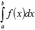.
Разобьем отрезок [a; b] на n элементарных отрезков 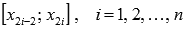 длины
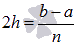 точками
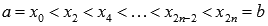. Пусть точки 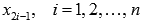 являются
серединами отрезков .png) соответственно. В
этом случае все "узлы" определяются из равенства 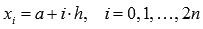.
соответственно. В
этом случае все "узлы" определяются из равенства 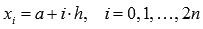.
Суть метода Симпсона.
На каждом интервале подынтегральная функция
приближается
квадратичной параболой
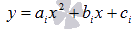, проходящей через точки 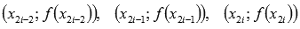.
Отсюда и
название метода - метод парабол.
Это делается для того, чтобы в качестве приближенного значения определенного
интеграла
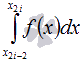 взять 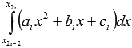, который мы можем
вычислить по
формуле Ньютона-Лейбница. В этом и
заключается суть метода парабол.
Геометрически это выглядит так:
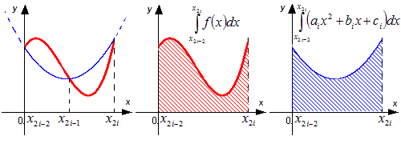
Формула метода Симпсона.
Формула метода Симпсона (парабол) имеет вид:
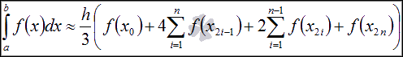Абсолютная погрешность Симпсона.
Абсолютная погрешность метода Симпсона оценивается как
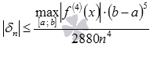Примеры приближенного вычисления определенных интегралов методом Симпсона.
Разберем применение метода Симпсона (парабол) при приближенном вычислении
определенных интегралов.
Обычно встречается два типа заданий:
В первом случае требуется приближенно вычислить определенный интеграл по формуле
Симпсона для заданного n.
Во втором случае просят найти приближенное значение определенного интеграла методом
Симпсона (парабол) с точностью формула (к примеру, с точностью до одной тысячной).
Вычисление.
| i | x[i] | f(x[i]) |
|---|